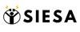

<mat-toolbar>
  
  <div class="spacer"></div>
<!--   <a mat-button routerLink="#">Inicio</a>
  <a mat-button routerLink="#">Proyecto</a> -->
  <button mat-raised-button id="button" (click)="logout()">
    <mat-icon>logout</mat-icon>
    Cerrar sesión
  </button>
</mat-toolbar>